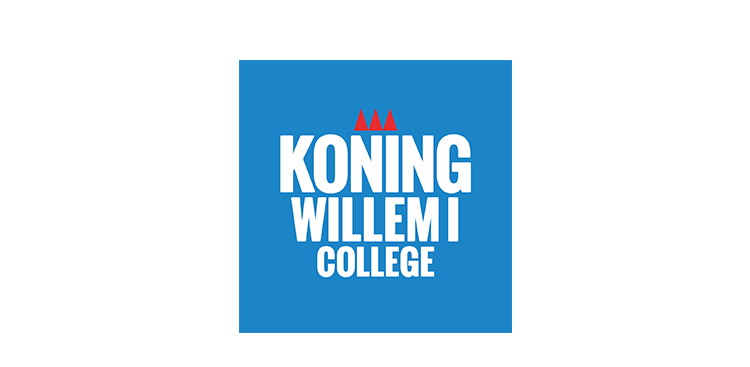

Professional Experience
-

Filmmaker graduate
2017 - 2021
- MBO-level (Associate's degree) in the south of the Netherlands.
- I have had three internships, all located in the Netherlands.
- This study was not where I wanted my journay to end. So, I went to BUas, to grow more as a person and professionally.
-


Distrubution centre employee.
2020 - Present
Fitcoach at local gym
2023 - Present
Education
-

BA in Creative Business, Breda University of Applied Sciences
2021 – Present
- I was the class representitive in my first year.
- I want to do a minor in Journalism.
- Exchange with Northern Arizona University.
-

High School Diploma, Effent
2013 - 2017
- VMBO-Level (A2/B1 level education).